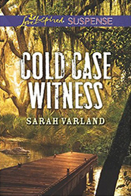

A DANGEROUS HOMECOMING... When her big-city dreams come crashing down, Gemma Phillips returns to her small hometown—and finds herself the target of a violent stalker. And her attacker may be linked to the robbery she witnessed years ago…a case reopened after the police discovered a body, supporting her claims of overhearing a murder. Now there's only one man who can save her: lawman Matt O'Dell. For Matt, solving this decades-old mystery will finally allow him to distance himself from his father's criminal past. But Matt's drive to close the case soon turns personal. He needs to guard his reputation…but first, he must protect the woman he's just discovered he loves.